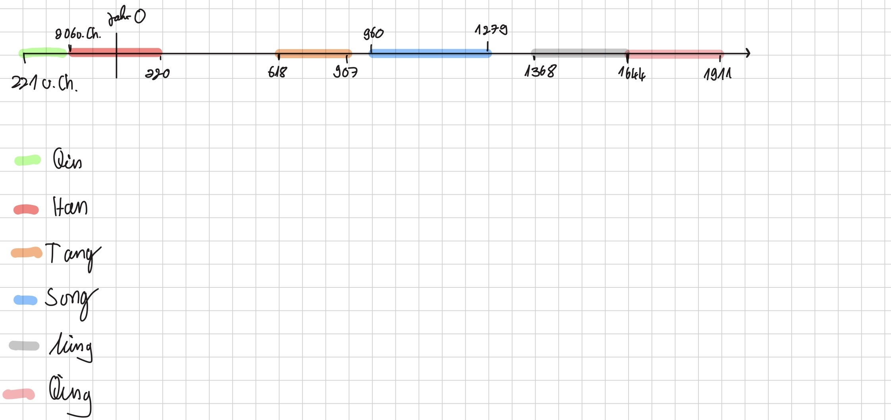

Politik und Herrschaft im alten China

Bildquelle 1: siehe Quellen
Im alten China spielte die Einheit des Landes eine sehr große Rolle. Bevor das Reich entstand, gab es viele kleine Stadtstaaten, die oft gegeneinander kämpften. Im Jahr 221 v. Chr. vereinte der König der Qin-Dynastie das Land. Diese Einigung machte China stark und legte den Grundstein für die ersten Kaiserreiche. Zum Schutz ließ er große Mauern bauen, aus denen später die Große Mauer entstand.
Der Kaiser stand an der Spitze des Reiches und galt als Zeichen von Stärke. Trotzdem regierte er nicht alles allein. Viele Aufgaben übernahmen Beamte und Offiziere, die im Namen des Kaisers handelten. Nach dem Ende der Qin-Dynastie übernahm ein General die Macht und gründete das Han-Reich. Die Han-Dynastie regierte besonders lange, von 202 v. Chr. bis 200 n. Chr., und prägte China stark.
Die Han-Kaiser förderten den Fernhandel und schlossen Friedensverträge mit Nachbarstaaten. Dadurch blieb das Reich über lange Zeit stabil. In späteren Jahrhunderten, besonders zwischen dem 14. und 18. Jahrhundert, wuchs die Bevölkerung stark. Kaiser Hongwu begann in dieser Zeit damit, das Reich stärker zu kontrollieren. Große Mauern blieben weiterhin wichtig, um das Land zu schützen.
Wirtschaft im alten China
_by_Emperor_Huizong.jpg)
Bildquelle 2: siehe Quellen
Die Wirtschaft war ein wichtiger Grund dafür, warum China lange Zeit ein starkes Imperium war. Die Chinesen machten viele bedeutende Erfindungen, noch bevor sie in Europa bekannt wurden. Sie stellten Roheisen und Werkzeuge her und nutzten Erdöl. Außerdem erfanden sie den Buchdruck und das Schießpulver.
China produzierte auch wertvolle Waren wie Seide, Papier und Keramik. Diese Produkte wurden im eigenen Land genutzt, aber auch gehandelt. Mit der Ausweitung von Handel und Märkten, besonders zu Beginn des Welthandels, wurde das Reich wirtschaftlich immer stärker. Der Handel hatte einen großen Einfluss auf die Gesellschaft und trug zum Wohlstand bei.
Während der Qing-Dynastie nahm dieser wirtschaftliche Aufschwung weiter zu. Handel, Bevölkerung und Wohlstand wuchsen deutlich. Dadurch blieb China über lange Zeit ein bedeutendes und reiches Land.
Kultur und Weltbild im alten China

Bildquelle 3: siehe Quellen
Die chinesische Kultur war vielfältig und stark geprägt. Die Han bildeten die größte ethnische Gruppe und umfassten viele verschiedene Sprachen und kulturelle Traditionen. Trotz dieser Vielfalt gab es gemeinsame Werte, die das Reich zusammenhielten. Eine besonders wichtige Rolle spielte der Kaiser. Er wurde als gottgleich angesehen und als "Sohn des Himmels" bezeichnet. Dadurch wurde seine Herrschaft gerechtfertigt.
Unter der Qing-Dynastie zeigte sich die Macht des Staates auch im Alltag. Alle Männer mussten einen Zopf tragen. Dieses äußere Zeichen sollte zeigen, dass sie sich der Herrschaft unterordneten. Kultur und Politik waren also eng miteinander verbunden.
China hatte ein starkes Selbstbild. Um das Jahr 1000 n. Chr. galt es als das am weitesten entwickelte Land der Welt. Händler und Fremde kamen in die Hauptstadt, wodurch Kontakte zu anderen Regionen entstanden. Besonders unter der Qing-Dynastie nahm der Kontakt zur Außenwelt zu. Trotzdem sah sich China weiterhin als kulturell überlegen.
Verwaltung im alten China

Bildquelle 4: siehe Quellen
Die Verwaltung im alten China war streng organisiert und basierte auf vielen festen Gesetzen. Sie sollte dafür sorgen, dass Ordnung im gesamten Reich herrschte. Dabei orientierten sich die Gesetze stark am Konfuzianismus, einer Lehre des Philosophen Konfuzius. Diese Lehre betonte klare Hierarchien und feste Regeln für das Zusammenleben.
Wichtige Werte waren Mitmenschlichkeit, Gerechtigkeit und der Respekt gegenüber Eltern und Vorgesetzten. Diese Tugenden sollten das Handeln der Menschen und der Beamten bestimmen. Die Einhaltung der Regeln wurde streng kontrolliert, damit es keine Unordnung gab.
China besaß ein ausgeprägtes Rechtssystem und eine gut funktionierende Bürokratie. Eine einheitliche Schrift erleichterte die Verwaltung des großen Reiches. Außerdem wurden Münzen, Maße und Gewichte vereinheitlicht. Das machte den Handel einfacher und stärkte die Kontrolle des Staates.
Wie wurde China zum Imperium? (Zusammenfassung)
China wurde über einen langen Zeitraum hinweg zu einem Imperium, weil es früh schaffte, Ordnung, Einheit und Kontrolle miteinander zu verbinden. Nachdem viele kleine Stadtstaaten existiert hatten, gelang es der Qin-Dynastie, das Land zu vereinen. Das war ein wichtiger Wendepunkt, denn dadurch entstand erstmals ein starkes Kaiserreich. Die Kaiser galten als mächtig und wurden von Beamten unterstützt, wodurch das große Reich verwaltet werden konnte. Gleichzeitig sorgten Gesetze, eine klare Verwaltung und gemeinsame Regeln dafür, dass alles zusammenhielt.
Auch wirtschaftlich entwickelte sich China stark, was nicht sofort passierte, aber mit der Zeit immer wichtiger wurde. Handel, Erfindungen und eigene Produkte wie Seide stärkten das Land und den Wohlstand. Dazu kam ein starkes Weltbild: China sah sich selbst als hochentwickelt und kulturell überlegen. Trotz Kontakten zur Außenwelt blieb dieses Selbstverständnis lange bestehen. Insgesamt wurde China also durch Einheit, stabile Herrschaft, eine gut organisierte Verwaltung und wirtschaftliche Stärke zu einem Imperium, das über viele Jahrhunderte Bestand hatte.
Zeitstrahl der Dynastiehen

Warum sah sich China als "Mitte der Welt"?
China sah sich als Mitte der Welt, weil es ein sehr mächtiges und gut organisiertes Reich war. Es war in vielen Bereichen wie Technik, Verwaltung und Handel anderen Regionen voraus. Außerdem glaubte man, dass der Kaiser als "Sohn des Himmels" zwischen Himmel und Erde steht, wodurch China als Zentrum der Welt galt.
Warum war China anderen Reichen lange Zeit überlegen?
China war anderen Reichen überlegen, weil es über Jahrhunderte eine stabile staatliche Ordnung hatte. Eine gut funktionierende Bürokratie mit klaren Gesetzen sorgte für Ordnung im ganzen Reich. Außerdem war China technisch sehr fortschrittlich und entwickelte wichtige Erfindungen früh.
Kannst du diese Wörter erklären?
(Einfach den Pfeil anklicken)
Kaiser
Ein Kaiser ist ein sehr mächtiger Herrscher über ein Land. Er hat die oberste Macht und entscheidet über Gesetze und die Regierung. Oft lässt er Beamte für sich arbeiten, bleibt aber die wichtigste Person im Staat.
Seidenstraße
Die Seidenstraße war kein einzelner Weg, sondern ein Netzwerk aus vielen Handelsrouten. Sie verband China mit dem Westen und machte den Austausch von Waren wie Seide, Porzellan, Gold oder Pferden möglich. Besonders wichtig war sie zur Zeit der Han-Dynastie.
Bürokratie
Bürokratie bedeutet, dass ein Staat mit festen Regeln, Gesetzen und Ämtern organisiert ist. Schon im alten China musste man Anträge stellen und Gesetze einhalten. Viele Beamte sorgten dafür, dass alles geregelt ablief.
Mandat des Himmels
Das Mandat des Himmels war eine religiöse und politische Vorstellung im alten China. Man glaubte, dass der Kaiser vom Himmel die Erlaubnis zum Regieren bekommt. Regierte er ungerecht oder schadete dem Volk, konnte er dieses Mandat verlieren.